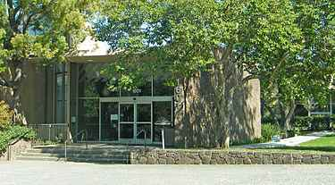

Employed by the military base at Moffett Field to assist in the development of their military technology
Stanford University contributed a huge part to the rise of silicon valley through their tech investments
, encouragement towards their students to start their tech companies and academic programs to nuture them
Frederick Terman, ex-dean of Stanford UniversityStanford contributed to the foundations of popular companies like HP and KodakMoffett Field (a military base then) got some help from Silicon Valley for resources in their military projects
1956
William Shockley founded the transistor, the most important invention in modern computing
Due to Shockley's difficult treatment towards his employees, 8 of them decided to quit his company and founded
their own company, Fairchild Semiconductors
After some time, those employees would dispand again and found other notable companies, like Intel
William Shockley, inventor of transistorThe first IBM HQThe traitorous 8 who founded more of the modern companies we known today
1960s
Internet's ancestor, the APRANET is created by IPTO
APRANET help set the foundations of the internet with the concept of more interconnected connections
between users
1970s
Venture Capital is emerging, encouraging more startups to emerge with the help of the financing
Homebrew Computer Club is founded, influencing the rise of computer culture and technological innovations
Steve Jobs and Steve Wozniak are few of the famous members of Homebrew Computer Club, both of them eventually founded AppleGordon French, the co-founder of Hombrew Computer Club
2000s
Silicon Valley is now the center of technology development, and support newer ones along the way

Stanford Research Park (owned by Stanford) still has many notable companies like HP and Apple as their tenants